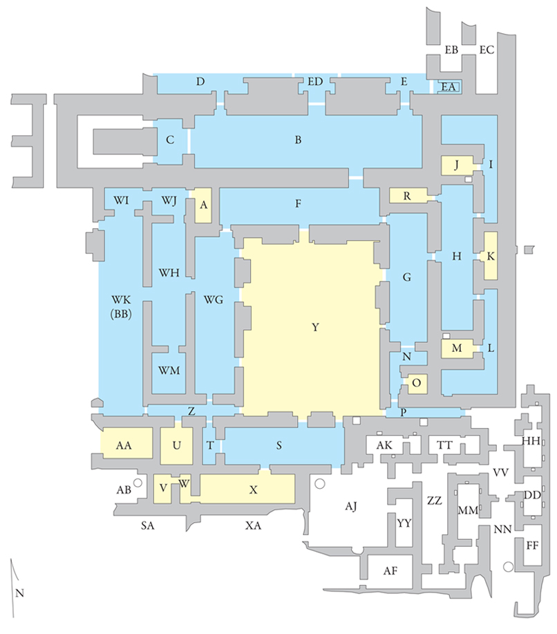

Nimrud NW Palace
The site of Nimrud is located on the Tigris River southeast of Mosul in the north of modern day Iraq. Today the city lies some kilometers east of the Tigris, but in antiquity the river flowed along the northwest side of the acropolis. The site was occupied intermittently from the 6th millennium BC to at least the Hellenistic period, but the most significant period of occupation occurred during the neo-Assyrian period, when Assurnasirpal II (883-859 BC) built Nimrud as the capital of his empire. The city remained the chief royal residence and administrative capital of the Assyrian empire until the reign of Sargon II (721-705 BC), though Esarhaddon (680-669 BC) later rebuilt much of the citadel.
The modern name Nimrud is taken from the biblical account of Nimrod the hunter who, according to Genesis 10:8-12, established the dynasty from which the Assyrians derived. The Assyrians themselves called the site Kalḫu (biblical Calah), a name which first appears in texts from the 13th century BC.
Individual rooms highlighted in blue are hyperlinked to more detailed pages

History of excavations
In 1820, Claudius James Rich, the East India Company’s resident in Baghdad, visited and provided the first modern description of Nimrud, but it was Austen Henry Layard who undertook the first large-scale excavations at the site. From 1845 to 1847 and again from 1849 to 1851, Layard, with the assistance of Hormuzd Rassam (who would go on to excavate scores of other Babylonian and Assyrian sites, including Nineveh), uncovered the walls and southern part of the North-West Palace, the Ninurta Temple, the South-West Palace, and the Ezida and Burnt Palace (which Layard called the South-East Palace). Layard also found the colossal gateway figures and impressive bas-reliefs that adorned the walls of the Northwest Palace, and the first of the magnificent “Nimrud Ivories.” Layard mistakenly assumed that the site of Nimrud contained the remains of ancient Nineveh, the final capital of the Assyrian Empire, and in 1849 he published an account of his adventures and excavations in Iraq. Nineveh and its Remains became an instant best-seller and ignited the Victorian world’s fascination with ancient Mesopotamia.
Shortly after the publication of Nineveh and its Remains, Layard left the excavation of Nimrud in the hands of Rassam. From 1854 to 1855, William K. Loftus took over from Rassam, extending the exposures of the Central Palace, the South-West Palace, the Nabu Temple, and the Burnt Palace. In the burnt palace he found a collection of ivories now known as the “Loftus Ivories.”
Between 1878 and 1880 Hormuzd Rassam returned to the site. Aside from his short excavation, the end of the 19th century and first half of the 20th century saw little serious archaeological work at Nimrud.
In 1949, the British School of Archaeology in Iraq (BSAI) sponsored renewed excavations at Nimrud under the direction of Sir Max Mallowan. The BSAI excavations continued until 1963, with David Oates and Jeffrey Orchard each succeeding Mallowan as director. The British teams worked on all areas of the acropolis and also excavated in the complex in the southeast corner of the site known as Fort Shalmaneser, where a large number of important ivories were found.
After the close of the BSAI excavations, foreign expeditions were absent from Nimrud for some time, although the Iraqi Department of Antiquities conducted excavations and restoration work intermittently beginning in 1956. As part of the Iraqi project, Muyasser Sa’id unearthed another collection of ivories in a courtyard of the Northwest Palace in 1975.
In 1974, foreign excavations resumed at Nimrud. The Polish archaeologist Janusz Meuszynski directed excavations on the acropolis palaces of Assurnasirpal II and Tiglath-Pileser III until 1976. Then, from 1987 to 1989, Paolo Fiorina and an Italian team of archaeologists surveyed the site and excavated at Fort Shalmaneser. In 1989, John Curtis and Dominique Collon of the British Museum continued excavations at Fort Shalmaneser.
Among the most significant recent discoveries at Nimrud are four tombs belonging to the royal women of Kalḫu. Excavated between 1988 and 1990 by Muzahim Mahmud and the Iraq Department of Antiquities, these tombs held a remarkable collection of gold vessels and precious stones.
The Northwest Palace
For one and a half centuries, the Northwest Palace was the king’s principle residence and the administrative center of the Assyrian empire. The building itself, over 200 meters long and at least 120 meters wide, is the largest and most significant structure on the site. It was here that Layard found the imposing inscribed and painted bas-relief panels that had adorned the walls of the palace. Layard and his successors also found bronze vessels, and a number of elaborately carved ivory pieces discarded in wells that had once been inlaid into furniture.
The Northwest Palace was probably completed between 869 and 865 BC. Its inauguration was celebrated with a large banquet, a description of which is preserved in an inscription on a large stone slab found in the palace. The text describes the building of the city of Kalḫu, the settlement of peoples from all over the kingdom in the city, the irrigation of orchards and gardens in the city, the dedication of temples, and the hunting and capture of exotic animals. Finally, the inscription describes the lavish dedicatory celebration attended by 69,574 invitees from all over Assyria. According to Assurnasirpal, they were provided with an enormous amount of food, including 1,500 ducks, 500 geese, 10,000 turtle doves, 10,000 loaves of bread, 10,000 jugs of beer, 10,000 skins of wine, and quantities of nuts, sheep, spices, and vegetables. The text concludes with Assurnasirpal expressing his satisfaction in the event: “For ten days I gave them food, I gave them drink, I had them bathe, and I had them anointed. (Thus) did I honor them (and) send them back to their lands in peace and joy” (Grayson 1991: 293).